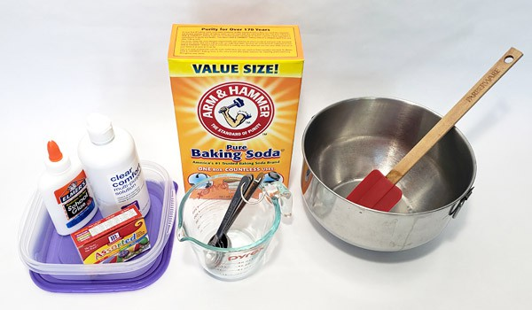
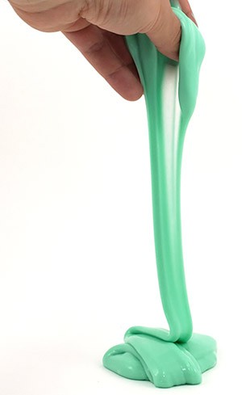

How to make a slime?
It's gooey. It's sticky. It's slime! Learn to make your own homemade slime with this quick and easy recipe.
Summary
Active Time
10-20 minutes
Key Concepts
Chemical reactions, material properties
Materials
- Washable PVA school glue (like Elmer's®)
- Water
- Baking soda
- Contact lens solution (must contain both boric acid and sodium borate in ingredients)
- Food coloring (optional)
- Measuring spoons
- Measuring cup
- Mixing bowl
- Spatula
- Resealable plastic bags or food storage containers

Prep Work
Make sure you have a clean work surface, like a kitchen countertop, that can get a little messy.
Instructions
- In the mixing bowl, thoroughly mix 1/2 C water, 1/2 C glue, and a few drops of food coloring.
- Add 1/2 tsp baking soda and mix completely.
- Add 2 tbsp contact lens solution and stir vigorously until the mixture starts pulling away from the edges of the
bowl.
- Use your hands to knead the slime for 5–10 minutes until its texture stops changing. Do not worry if the slime
is very runny and sticks to your hands at first. It will get easier to peel the slime off your hands as it gets
thicker.
- Have fun playing with your slime!
